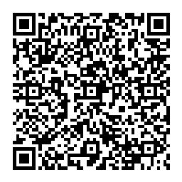
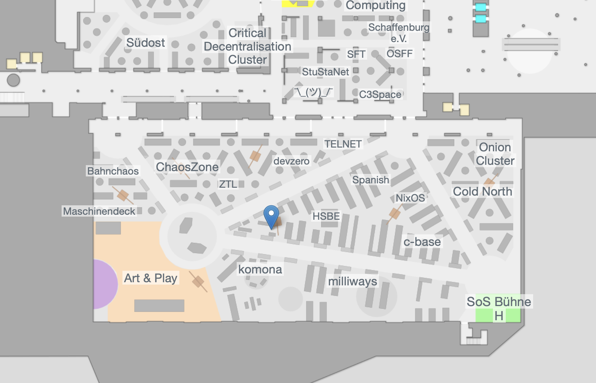

Delta Chat uses the existing email infrastructure for Messaging, it enables you to use email for chatting and reach anyone that uses email.
Delta Chat uses the existing email infrastructure for Messaging, it enables you to use email for chatting and reach anyone that uses email.
💬 Message anyone with an e-mail address even if they don’t use Delta Chat.
🥳 Enjoy interactive chat experiences through webxdc apps.
🔒 End-to-End Encryption using Autocrypt and SecureJoin protocols, with multiple security audits.
No one likes creating new accounts when you just want to quickly test an app, that's why we created chatmail, a email server where you can get a slot/account with just a qr code scan: no personal details required, not even a password.
Download Delta Chat on your device: https://get.delta.chat (available for Android, iOS, Linux, Windows, MacOS and even Ubuntu Touch / Ubports)
Scan or tap/click the qr code to get an account instantly:

Optional: join our event group with this qr code (click or scan)

The chatmail account you get is limited (can't send unencrypted messages to the outside for example), read more at: https://nine.testrun.org
Day 1 18:00 Stage H
This workshop shows how set up a simple mail server with chatmail, that is optimized for chatting with Delta Chat. It's never been easier to create your own decentralized chat server.
Maybe we will do more sessions, follow us on the mastodon to be notified when we decided: https://chaos.social/@delta
Fediverse: https://chaos.social/@delta
